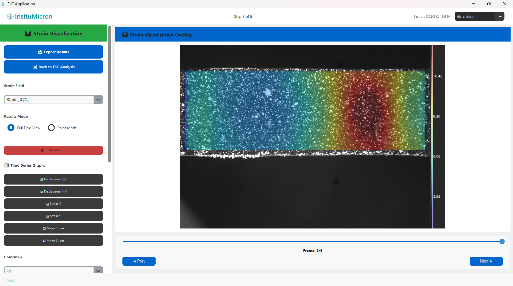

DIC Analysis & Results
The core analysis module. Tracks the deformation of your specimen across the image sequence using full-field Digital Image Correlation. Computes displacement and strain fields for every tracked point in every frame. The Results section is integrated directly within this module.

5.1 Left Control Panel — DIC Configuration
The left scrollable panel contains all settings needed to configure and run the DIC analysis. Work through the controls from top to bottom before clicking Run.
Images Section
| Control | Description |
|---|---|
| Load Image Sequence (blue button) | Opens a file browser for selecting the image sequence. Select all files in one operation (hold Shift or Ctrl). The first image in the selected set automatically becomes the reference frame. All subsequent images are treated as deformed frames. |
| Live Capture (purple button) | Opens an integrated camera capture panel, allowing you to build the image sequence in real-time from a connected FLIR or USB camera. |
| Image count status label | Displays one of: "No images loaded" (default), or "X images loaded" (green) confirming the number of frames ready for analysis. |
ROI (Region of Interest) Selection
Define the area of the image that will be tracked. Restricting the ROI to the specimen surface (excluding fixtures, grips, and background) significantly reduces computation time and improves result quality.
| Control | Description |
|---|---|
| Rectangle (radio button) | The ROI will be drawn as a rectangle. Suitable for most specimens. |
| Polygon (radio button) | The ROI will be drawn as a free-form polygon (multiple vertices). Use for irregularly shaped specimens or when the ROI must closely follow a curved edge. |
| Select ROI (button) | Activates drawing mode. Click on the right-panel canvas to define the ROI. For Rectangle: click-drag to draw. For Polygon: click each vertex in sequence, then close by clicking the starting point or pressing Enter. |
| Undo Pt (orange — Polygon mode only) | Removes the most recently placed polygon vertex. Click multiple times to remove multiple points. |
| Clear (button) | Removes the current ROI entirely. The canvas returns to showing the full image. This button is disabled until an ROI has been defined. |
| ROI info label | Displays the coordinates and pixel dimensions of the current ROI (e.g., "ROI: (120, 80) — 640×480 px"). |
Analysis Mode
| Mode | Description |
|---|---|
| Full-Field Grid (radio button) | Places a regular grid of tracking points (subsets) evenly spaced across the entire ROI. This produces displacement and strain field maps covering the whole specimen surface. This is the standard DIC mode for most applications. |
Subset (Facet) Size
The subset is a small square image patch centered on each tracking point. The DIC algorithm searches for this patch in each deformed image to determine how much it has moved.
| Control | Description |
|---|---|
| Subset Size slider (range: 10–150 px, default: 51) | Sets the side length of the tracking subset in pixels. Larger subsets are more stable and resistant to noise but capture coarser deformation gradients. Smaller subsets capture finer deformation detail but can fail in low-contrast or severely deformed regions. |
| Direct entry box | Type a specific subset size value. Press Enter or click away to apply. The slider updates to match. |
| Quick Presets: 21 / 31 / 51 / 75 (buttons) | Jump immediately to commonly used subset sizes. Equivalent to typing the value manually. |
Grid Step (Point Spacing)
| Control | Description |
|---|---|
| Grid Step slider (range: 8–252 px, default: 90) | Sets the center-to-center spacing between adjacent tracking points in the full-field grid. Smaller step = more tracking points = higher spatial resolution but longer computation time. Larger step = fewer points = faster but coarser field maps. |
| Direct entry box | Type a specific grid step value. The slider updates to match. |
5.2 Run Analysis Controls
| Control | Description |
|---|---|
| Run DIC Analysis (large green button) | Starts the full DIC correlation engine in a background thread. The right-panel canvas begins updating frame-by-frame as results are computed. This button is disabled once analysis begins. |
| Stop (red button — visible only during analysis) | Halts the running analysis after the current frame completes. Any frames analyzed up to that point are retained and available for visualization and export. |
| Analysis Progress bar | Fills from left to right as each frame is processed. Shows completion percentage. |
| "Frame X / Y" label | Shows the current frame being analyzed (e.g., "Frame 45 / 120"). Updates in real-time. |
5.3 Right Panel — Image Canvas
The right panel displays your reference image in a zoomable canvas. After setting the ROI, the grid of tracking points becomes visible as an overlay.

[Screenshot: Reference image with green subset grid overlay and white scale bar]